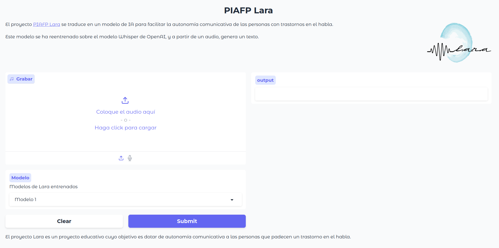

Esta sesión no está finalizada, así que mejor espera unos días y vuelve a intentarlo... En principio, la quiero tener lista para mitad de octubre.
Gradio es una herramienta que facilita el prototipado de demos para modelos de ML mediante un interfaz web amigable, de manera que con unas pocas líneas de código Python tengamos un interfaz gráfico que nos evite tener que desarrollar toda una aplicación web para comprobar el funcionamiento de nuestros modelos de IA, sin necesidad de saber JavaScript ni CSS para hacer un diseño responsive.
Alternativas
Las alternativas actuales son Streamlit para prototipado y creación de cuadros de mandos de forma programativa y ágil, y si ya dejamos el prototipado y nos centramos en entornos de producción, las herramientas más empleados son Flask y Django, pero requiriendo un mayor dominio de estás tecnologías al estar centradas en el desarrollo web y no en el prototipado para modelos ML.
Gradio se resume, principalmente, en tres elementos:
Interfaz: la clase principal para crear interfaces de usuario.
Componentes: tanto de entrada como de salida (por ejemplo, cuadros de texto, imágenes, audio, etc...). Actualmente hay más de 30 componentes incorporados.
Funciones: funciones Python que procesan la información de los componentes de entrada y devuelven los resultados para mostrarlos con componentes de salida.
A continuación vamos a ver cómo, con sólo un par de líneas, creamos un diálogo para un introducir texto como entrada y una caja para mostrar el resultado:
Al ejecutar el script, ya sea mediante python hello-gradio.py o mejor con gradio hello-gradio.py, se publicará la aplicación en una URL privada, normalmente en http://127.0.0.1:7860, donde podemos ver cómo ha creado un diálogo de tipo texto con nombre para introducir la entrada, y otro output, para mostrar la salida:
Hola gradio!
Tras introducir una frase de entrada, aparece el resultado de ejecutar la función saluda:
Hola gradio! - response
Para crear una URL pública, cambiaremos la último línea de nuestro script con:
demo.launch(share=True)
Si volvemos a ejecutar el script, ahora nos mostrará tanto la URL local como la remota para poder acceder a nuestra demo durante 72 horas de forma gratuita (mediante la conexión remota sólo se realiza una pasarela con nuestro ordenador local, de manera que tanto el modelo de IA como toda la computación se realiza en nuestra máquina local, con lo que si la detenemos, ya no funcionará):
Gradio y HuggingFace van de la mano, de manera que podemos desplegar nuestras aplicaciones Gradio en Spaces de HuggingFace para ofrecer una solución rápida para probar nuestros modelos desplegados.
Al final de la ejecución nos recomienda el uso de Spaces. Así pues, si queremos desplegar el modelo en Spaces, el primer paso será hacer login con las credenciales de Hugging Face.
La clase Interfaces es la clase de más alto nivel, y permite crear el IU de nuestros modelos ML.
Del ejemplo anterior, hemos visto que la clase Interface recibe tres parámetros: Interface(fn=funcion, inputs=entradas, outputs=salidas, ...):
fn: función que invoca al modelo ML o realiza la funcionalidad deseadas. La función acepta al menos un parámetros y devuelve uno o más valores.
inputs: define el tipo del componente de entrada (o los tipos de los componentes si tenemos varias entradas). Gradio ofrece varios componentes predefinidos, como de tipo texto, imagen, micrófono, etc... La cantidad de componentes de entrada debe coincidir con el número de parámetros indicados en la función fn. Si asociamos None a inputs, sólo se muestran los componentes de salida.
outputs: igual que el caso anterior, define el tipo del componente de salida (o los tipos de los componentes si tenemos varias salidas). Gradio ofrece varios componentes predefinidos, como de tipo texto, imagen, etiqueta, etc... La cantidad de componentes de salida debe coincidir con el número de valores devueltos por la función fn. Si asociamos None a outputs, sólo se muestran los componentes de entrada.
En el caso de crear varios interfaces, Gradio ofrece las clases TabbedInterface, Parallel, y Series para combinar interfaces.
Por ejemplo, a modo de aplicación de bienvenida, podemos definir una serie de funciones que muestren al usuario diferentes mensajes y utilizar un TabbedInterface para combinarlos mediante el uso de pestañas:
gradio-tabbed.py
importgradioasgr#app 1defsaluda(nombre):return"¡Hola "+nombre+"! 😎"app1=gr.Interface(fn=saluda,inputs="text",outputs="text")#app 2defmensaje(accion):return"Hoy vamos a "+accion+" con Gradio"app2=gr.Interface(fn=mensaje,inputs="text",outputs="text")demo=gr.TabbedInterface([app1,app2],["Bienvenid@","¿Qué hacemos?"],"Uso de pestañas")demo.launch()
Fíjate en la siguiente imagen en la creación de las pestañas, y el nombre de cada etiqueta:
Además de los controles, podemos configurar ciertos elementos, como el título o la descripción, o cambiar el tema de todo el interfaz.
Para ello, cuando definimos el interfaz tenemos disponibles los parámetros:
title: título, se muestra en la parte superior y como título de la página
description: acepta tanto texto como Markdown o HTML, y se coloca debajo del título
article: acepta tanto texto como Markdown o HTML, y se coloca debajo del interfaz.
theme: mediante gr.Theme() podemos cambiar toda la apariencia visual. Tenemos un conjunto de temas disponibles, o podemos crear los nuestros propios, tanto a nivel de colores o fuentes como de tamaños de los componentes. También podemos utilizar temas creados por terceros mediante gr.Theme.from_hub().
La clase Blocks es la API de bajo nivel de Gradio que nos permite controlar el flujo de datos, la disposición y agrupación de los componentes y los eventos que disparan la ejecución de las funciones de las aplicaciones Gradio, como si fueran bloques.
El uso básico de Blocks es el siguiente: tras crear un objeto Blocks, lo usaremos como contexto (mediante la sentencia with) y definiremos los diseños, componentes o eventos dentro del contexto Blocks. Finalmente, llamaremos al método launch() para lanzar el gradio.
Veamos un ejemplo sencillo, donde combinamos componentes como Markdown, botones o cajas de texto interactivas:
gradio-blocks.py
importgradioasgrdefmodifica(nombre):returnf"¡Bienvenido a Gradio, {nombre}!"withgr.Blocks()asdemo:gr.Markdown("Escribe debajo y pulsa *Ejecuta* para ver la salida")withgr.Row():inp=gr.Textbox(placeholder="¿Cómo te llamas?",label="Entrada")out=gr.Textbox(label="Salida")btn=gr.Button("Ejecuta")btn.click(fn=modifica,inputs=inp,outputs=out)demo.launch()
Tras lanzar el Gradio, veremos el siguiente interfaz, el cual captura el evento click del botón y concatena el nombre en la salida:
Uso de Blocks
Sobre este ejemplo, vamos a quitar el botón, y asociar el manejador a un cambio en la entrada, capturando el evento change:
gradio-blocks-change-py
importgradioasgrdefmodifica(nombre):returnf"¡Bienvenido a Gradio, {nombre}!"withgr.Blocks()asdemo:gr.Markdown("Escribe debajo y comprueba la salida")withgr.Row():inp=gr.Textbox(placeholder="¿Cómo te llamas?",label="Entrada")out=gr.Textbox(label="Salida")inp.change(fn=modifica,inputs=inp,outputs=out)demo.launch()
De esta manera, cada vez que escribimos, se actualizará la salida:
Uso de Blocks con evento change
Dependiendo del componente, tendremos diferentes manejadores de eventos. Acabamos de ver que el componente gradio.Textbox() ofrece el manejador change() que se dispara al cambiar el texto al teclear. Otro ejemplo sería gradio.Video() que ofrece el manejador play(), el cual se dispara cuando un usuario pulsa play.
La disposición (layout) de los bloques de una aplicación se pueden personalizar mediante clases como gr.Row(), gr.Columns(), gr.Tab() o gr.Accordion().
Filas
Por ejemplo, podemos utilizar filas dentro de los bloques mediante gr.Row(), de manera que todos los hijos de nuestra aplicación se renderizan horizontalmente:
También podemos organizar los componentes en forma de pestañas utilizando gradio.Tab(). Los componentes de una pestaña concreta se mostrarán cuando un usuario navegue a la pestaña correspondiente. A cada pestaña se le asigna una etiqueta.
Normalmente, la función que pasamos a la clase Interface o Block devuelve un valor, ya sea el resultado de un cálculo o de la inferencia a algún modelo de ML.
Pero, podemos devolver otro componentes que modifica las propiedades de los componentes de salida, como pueden ser el número de líneas de un Textbox o la visibilidad de un Image.
El siguiente ejemplo muestra como modificamos tanto el tamaño como la visibilidad (mediante la propiedad visible) de un componente de texto:
gradio-visibilidad.py
importgradioasgrdefupdateTextbox(eleccion):ifeleccion=="Pequeño":returngr.Textbox(lines=1,visible=True)elifeleccion=="Grande":returngr.Textbox(lines=6,visible=True)else:returngr.Textbox(visible=False)demo=gr.Interface(updateTextbox,gr.Radio(["Pequeño","Grande","Sin mensaje"],label="¿Qué tipo de mensaje quieres enviar?"),gr.Textbox(lines=2))demo.launch()
Gradio dispone de un conjunto de componentes predefinidos para varias funciones, ya sea desde trabajar con texto o multimedia como audios, imágenes y vídeo como gráficos mediante Matplotlib o Seaborne.
Podemos mostrar textos mediante el componente Textbox. Cada método ofrece una area de texto para introducir una cadena de entrada o mostrar una cadena de salida. A la hora de pasarle el componente al Interface, podemos indicar el componente o la cadena text, tanto para la entrada como para la salida.
También podemos mostrar código fuente utilizando un Textbox:
gradio-code.py
importgradioasgrcode='''def calMedia(numeros): suma = 0 for n in numeros: suma = suma + n media = suma / len(numeros) return media'''withgr.Blocks()asdemo:gr.Textbox(code)demo.launch()
Para mostrar datos, podemos emplear diferentes tipos como str, number, bool, date o markdown, o incluso DataFrames de Pandas mediante dataframe.
Para obtener otros tipos de datos, hemos de indicarlo en la salida. Por ejemplo, podemos obtener un array de NumPy indicando numpy, y array si queremos un array de Python.
En Gradio podemos mostrar elementos como imágenes, así comos transformar las imágenes aplicando un filtro como el sepia o el azul. Para ello, en la entrada podemos pasar componentes de tipo Image, Video, Audio o File.
El siguiente ejemplo muestra cómo visualizar una imagen después de aplicar un filtro de tono azul.
importnumpyasnpimportgradioasgrdefblueHue(inputImg):# definimos el filtroblueHueFilter=np.array([[0.272,0.534,0.131],[0.349,0.686,0.168],[0.393,0.769,0.189]])blueHueImg=inputImg.dot(blueHueFilter.T)blueHueImg/=blueHueImg.max()returnblueHueImgdemo=gr.Interface(blueHue,gr.Image(height=300,width=200),"image")demo.launch()
Componente Image
De forma similar, podemos mostrar vídeos sin ningún procesamiento:
Los elementos gráficos se muestran en Gradio mediante el componente gradio.Plot(). Después de crear el gráfico, puede especificar fn = funcionDibujaGrafico, input = None y output = gradio.Plot().
Ya existen una serie de gráficos ya predefinidos, como BarPlot,
importgradioasgrdefcreateBarPlot():x=["Manzanas","Plátanos","Naranjas"]# Etiquetas del eje Xy=[10,15,7]# Valores para cada barra# Devolver los datos en el formato adecuado para gr.BarPlotreturn{"labels":x,# Etiquetas del eje X"data":[y],# Los datos, como una lista de listas"title":"Frutas más vendidas",# Título del gráfico"x":"Frutas",# Etiqueta para el eje X"y":"Cantidad"# Etiqueta para el eje Y}demo=gr.Interface(fn=createBarPlot,inputs=None,outputs=gr.BarPlot())demo.launch()
Mediante gradio.Button() podemos definir un botón de envío nuestras aplicaciones especificando value="Enviar" y añadiendo un evento gradio.Button.click():
gradio-button.py
importgradioasgrdefcombinar(a,b):return"¡Hola "+a+" "+b+'!\n'+" Bienvenido a IABD"withgr.Blocks()asdemo:txtIn1=gr.Textbox(label="Nombre",lines=2)txtIn2=gr.Textbox(label="Apellidos")txtOut=gr.Textbox(value="",label="Salida")btn=gr.Button(value="Enviar")btn.click(combinar,inputs=[txtIn1,txtIn2],outputs=[txtOut])demo.launch()
Cuando tenemos varios valores para elegir, podemos utilizar un gradio.Checkbox() o un gradio.CheckboxGroup() para mostrar una caja con las opciones posibles:
gradio-checkbox.py
importgradioasgrdefcrearFrase(tipo,listaActividades):returnf"Se agradece un café {"cargado"iftipoelse"suave"} acompañado de {" y ".join(listaActividades)}"demo=gr.Interface(crearFrase,[gr.Checkbox(label="Cargado"),gr.CheckboxGroup(label="Café con...",choices=["tostadas","galletas","magdalenas","las noticias"]),],"text")demo.launch()
Mediante gradio.Slider() crearemos un deslizador entre un rango de valores con un tamaño de pasos. La posición por defecto la indicaremos mediante el valor.
En el siguiente ejemplo, combinamos los componentes vistos anteriormente con un deslizador y un campo de tipo fecha:
gradio-slider.py
importgradioasgrimporttimedefcrearFrase(fecha,cantidad,tipo,listaActividades):returnf"A las {cantidad} me {"tomé"iffecha<time.time()else"tomaré"} un café {"cargado"iftipoelse"suave"} acompañado de {" y ".join(listaActividades)}"demo=gr.Interface(crearFrase,[gr.DateTime(label="Fecha...",include_time=False),gr.Slider(label="Hora...",minimum=2,maximum=24,value=8,step=2),gr.Checkbox(label="Cargado"),gr.CheckboxGroup(label="Café con...",choices=["tostadas","galletas","magdalenas","las noticias"])],"text")demo.launch()
Mediante gradio.Dropdown() podemos indicar un elemento de una lista de posibilidades mediante un componente desplegable:
gradio-dropdown
importgradioasgrimporttimedefcrearFrase(fecha,cantidad,tipo,listaActividades,media):returnf"A las {cantidad} me {"tomé"iffecha<time.time()else"tomaré"} un café {"cargado"iftipoelse"suave"} acompañado de {" y ".join(listaActividades)} o ver {media}"demo=gr.Interface(crearFrase,[gr.DateTime(label="Fecha...",value="now",include_time=False),gr.Slider(label="Hora...",minimum=2,maximum=24,value=8,step=2),gr.Checkbox(label="Cargado"),gr.CheckboxGroup(label="Café con...",choices=["tostadas","galletas","magdalenas","las noticias"]),gr.Dropdown(["una serie","una película","un documental","un concierto"])],"text")demo.launch()
Componentes Slider, DateTime y Dropdown
Más componentes
Como puedes imaginar, hay muchos más componentes que puedes consultar en la documentación oficial.
Gradio nos permite marcar las ejecuciones (flag) para recopilar datos sobre los usuarios que utilizan nuestras aplicaciones o modelos, especialmente puntos de datos en los que la aplicación se comporta de forma inesperada.
Para ello, en toda interfaz aparece el botón Flag, con el cual el usuario puede enviar datos al lugar donde se está ejecutando la aplicación.
Gradio permite cuatro parámetros en el componente gradio.Interface() que definen cómo funciona:
allow_flagging: por defecto está activo (si no queremos que aparezca el botón, lo ponemos a False)
flagging_options: listad de diferentes botones a mostrar
flagging_dir: indica donde se almacenan los datos de las ejecuciones
flagging_callback: función a invocar al pulsar sobre cada flag.
Veamos su uso con un ejemplo de una calculadora:
gradio-flagging.py
importgradioasgrdefcalcula(num1,operacion,num2):ifoperacion=="suma":returnnum1+num2elifoperacion=="resta":returnnum1-num2elifoperacion=="producto":returnnum1*num2elifoperacion=="división":returnnum1/num2demo=gr.Interface(calcula,["number",gr.Radio(["suma","resta","producto","división"]),"number"],"number",flagging_mode="manual",flagging_options=["signo incorrecto","división por cero","otro"])demo.launch()
Si probamos diferentes operaciones, veremos que nos crea el archivo .gradio/flagged/output/dataset1.csv con los valores de entrada marcados, la salida, el botón pulsado y el timestamp:
dataset1.csv
num1,operacion,num2,output,flag,timestamp
3,resta,'-2,5,división por cero,2024-10-13 19:12:45.842902
3,división,2.234532414213453e+63,1.3425627576120835e-63,otro,2024-10-13 19:13:06.604335
Añadir ejemplos a un Gradio es tan fácil como proporcionar una lista de listas con el parámetro examples. Cada sublista es una muestra de datos, donde cada elemento corresponde a una entrada de la función de predicción. Las entradas deben estar ordenadas en el mismo orden en que las espera la función de predicción.
Si nuestro interfaz sólo tiene un componente de entrada, podemos proporcionar los ejemplos como una lista normal en lugar de una lista de listas.
También podemos especificar una ruta a un directorio que contenga los ejemplos. Si nuestro interfaz sólo acepta un único tipo de archivo de entrada, por ejemplo, un clasificador de imágenes, simplemente pasaremos la ruta de un directorio al argumento examples, y la interfaz cargará las imágenes del directorio como ejemplos. En el caso de entradas múltiples, este directorio debe contener un archivo log.csv con los valores de los ejemplos.
En el contexto de la demo de la calculadora vista en el apartado anterior, podemos establecer examples='/demo/examples' y en ese directorio incluimos el siguiente fichero log.csv:
(RAPIA.3 / CEPIA.3b, CEPIA.3c / 2p) Mediante Gradio y a partir de la siguiente imagen, crea el interfaz de usuario del prototipo para probar el proyecto Lara:

Gradio de Lara
En sesiones posteriores introduciremos el modelo Whisper para transcribir de audios a texto y hacer el prototipo funcional. Por lo tanto, en esta actividad sólo necesitamos crear el interfaz gráfico.
(RAPIA.3 / CEPIA.3b, CEPIA.3c / 3p) Crea un prototipo mediante Gradio que permita traducir entre dos idiomas (por ejemplo, de castellano a inglés y viceversa), haciendo uso de algún control que te facilite decidir el sentido de la traducción (y por tanto el modelo a emplear). Para ello, emplea los modelos opus-mt-xx-yy de traducción que necesites de Helsinki-NLP.